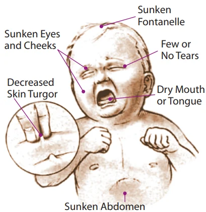
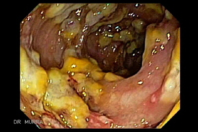

Boala diareică acută la copil
2.2.12 · Etiologie · Evaluarea deshidratării · Rehidratare orală · Colita pseudomembranoasă · Esențialul în Medicina de Familie (Matei, Gherghina, Codreanu)
BDA este a doua cauză de deces la copiii sub 5 ani pe plan mondial — 1,5-2 milioane de decese anual, majoritatea evitabile prin rehidratare orală corectă. În țările cu resurse limitate, un sugar face în medie 6 episoade diareice/an. Pentru MF, decizia corectă se ia în cabinet: rehidratare acasă sau internare? Antibiotic sau nu? Formule delactozate sau alimentație obișnuită? Majoritatea erorilor terapeutice (abuz antibiotice, antidiareice, înfometare prelungită, perfuzii inutile) întrețin cercul vicios diaree-malnutriție-imunosupresie.
Definiție, epidemiologie și etiologie
Boala diareică acută (BDA) este definită prin creșterea frecvenței și scăderea consistenței scaunelor. Sine qua non pentru diagnostic e diareea — asociată variabil cu vărsături, inapetență, febră și dureri abdominale.
Importanța clinică a BDA pentru medicul de familie depășește episodul acut. Diareea e una dintre cauzele principale ale malnutriției la sugar și preșcolar, iar cazurile neglijate sau tratate greșit alimentează un cerc vicios diaree-malnutriție-imunosupresie-infecții recurente.
În țările dezvoltate, etiologia virală domină net. Rotavirusul este agent cauzal în 11-71% dintre cazuri (media 33%), fiind principal responsabil la copilul de 6-24 luni. Bacteriile rămân relevante mai ales în sezoanele calde și în contexte de igienă precară.
- Bacterii enteropatogene — Escherichia coli (enteropatogen, enteroaderent, enterotoxigen, enterohemoragic, enteroinvaziv), Shigella (4 grupuri), Campylobacter jejuni, Salmonella, Vibrio cholerae, Yersinia enterocolitica, Plesiomonas.
- Paraziți intestinali — protozoare (Giardia lamblia, Entamoeba histolytica, Cryptosporidium, Cyclospora), nematode (Ascaris lumbricoides, Trichiuris trichiura, Strongyloides), alte metazoare (Fasciola hepatica, Enterobius vermicularis, Taenia).
- Virusuri — Rotavirus (dominant), Norovirus (Virusul Norwalk), Adenovirusuri enterale, Calicivirusuri umane.
Sugarul are un raport apă totală / suprafață corporală mai mare decât adultul și o rată metabolică dublă raportată la greutate. Pierderile lichidiene prin scaun reprezintă un procent semnificativ mai mare din volumul extracelular. La asta se adaugă capacitatea limitată a rinichiului imatur de a concentra urina (< 400 mOsm/L la sugar vs. 1200 mOsm/L la adult) — deci compensarea prin retenție renală e ineficientă. Un sugar cu 6-8 scaune apoase/zi poate pierde 10% din greutate în 24h, în timp ce un adult cu același ritm ar fi doar inconfortabil.
Diaree apoasă
- Scaune lichidiene fără elemente patologice
- Etiologie dominantă: Rotavirus, Norovirus, E. coli enterotoxigen, V. cholerae
- Copil < 2 ani, sezon rece
- NU antibiotic (self-limiting)
- Mecanism: secretor/osmotic
Diaree invazivă (dizenterică)
- Scaune apoase cu mucus și sânge
- Etiologie dominantă: Shigella, Campylobacter, E. coli enteroinvaziv, Salmonella, Entamoeba
- Orice vârstă, deseori febră înaltă, dureri abdominale intense
- Antibiotic indicat în formele documentate (azitromicină pentru Shigella/Campylobacter)
- Mecanism: invaziv cu ulcerații mucosale
B) GREȘIT — Giardia determină tipic diaree cronică cu steatoree și distensie abdominală, nu BDA tipică de sugar.
C) GREȘIT — E. coli enterotoxigen e o cauză de "diaree a călătorului" la adulți și de enterocolite în contexte de igienă precară, nu agentul principal la sugar în țări dezvoltate.
E) GREȘIT — Shigella determină diaree invazivă, sanguinolentă, cu febră înaltă — nu e agentul principal la sugar în țări dezvoltate, unde prevalența bacteriană e mică.
Evaluarea clinică — deshidratarea
Examenul clinic trebuie să aprecieze: statusul nutrițional, gradul de deshidratare, aspectul scaunelor și eventualele comorbidități.
Aprecierea gradului de deshidratare trebuie realizată cu rigurozitate pentru evitarea posibilelor complicații precum convulsiile, șocul hipovolemic și chiar decesul. Clasificarea se face în 3 grade (Tabelul 2.2.12.1 din ESMF):

- Ce observi: schemă didactică a celor 6 semne cardinale ale deshidratării la sugar — fontanelă deprimată (sunken fontanelle), ochi înfundați cu cearcăne (sunken eyes and cheeks), absența lacrimilor (few or no tears), gură/limbă uscate (dry mouth or tongue), turgor cutanat scăzut (decreased skin turgor — pliu persistent la pensulare), abdomen retractat (sunken abdomen).
- Ce observi: schemă didactică a celor 6 semne cardinale ale deshidratării la sugar — fontanelă deprimată (sunken fontanelle), ochi înfundați cu cearcăne (sunken eyes and cheeks), absența lacrimilor (few or no tears), gură/limbă uscate (dry mouth or tongue), turgor cutanat scăzut (decreased skin turgor — pliu persistent la pensulare), abdomen retractat (sunken abdomen).
- Ce sugerează: prezența concomitentă a 3 sau mai multe semne din acestea plasează copilul în categoria deshidratare moderată-severă (>5%) → necesită rehidratare supravegheată conform Planului B sau C.
- Diferențial vizual: fontanela deprimată apare TARDIV (~7-8% pierdere) — absența ei nu exclude deshidratarea. Pliul cutanat persistent are valoare crescută când se pensulează peretele abdominal, NU pielea mobilă a brațelor (care poate da fals-pozitiv la sugarul cu țesut adipos redus).
Tabelul 2.2.12.1 — Aprecierea gradului de deshidratare (după ESMF cap. 2.2.12)
| Semne clinice | Deshidratare < 5% | Deshidratare 5-10% | Deshidratare > 10% |
|---|---|---|---|
| Stare generală | Bună, alert | Iritabil | Letargic |
| Ochi | Normali | Înfundați în orbite | Înfundați profund în orbite |
| Pliu cutanat abdominal | Elastic | Tendință la persistență | Persistent |
| Prezența setei | Normală | Însetat, bea viguros | Sete absentă sau slabă |
| Estimarea deficitului lichidian | < 50 ml/kg corp | 50-100 ml/kg corp | > 100 ml/kg corp |
| Conduita terapeutică | Plan A — ORS la domiciliu | Plan B — ORS supravegheat 4-6h | Plan C — Spitalizare + rehidratare i.v. |
- < 5% = Plan A → ORS la domiciliu + alimentație continuă.
- 5-10% = Plan B → ORS 50-100 ml/kg în 4-6h sub supraveghere.
- > 10% = Plan C → SPITALIZARE obligatorie + rehidratare i.v.
Evaluarea corectă a gradului decide locul tratamentului.
Pliul cutanat persistent reflectă scăderea turgorului tegumentar secundar pierderii volumului extracelular. Pe brațe, țesutul adipos subcutanat variază foarte mult cu vârsta și starea de nutriție — la sugarul slab, pliul poate fi fals-pozitiv fără deshidratare. Peretele abdominal anterior are grosime tegumentară mai uniformă între copii și e mai sensibil la modificările de hidratare — se pensulează între police și index, lateral de ombilic. Revenire <2 sec = normal; >2 sec = deshidratare semnificativă.
B) GREȘIT — "Ceaiul de mentă" nu e rehidratare. Și chiar gastroenterita virală cu deshidratare severă necesită spitalizare, nu se tratează simplu la domiciliu.
D) GREȘIT — pierderea în greutate este 9,4 kg → 8,5 kg = 0,9 kg din 9,4 kg = 9,6% — nu < 5%. Plus, letargia și pliul persistent sunt semne de deshidratare severă.
E) GREȘIT — lăsarea unui sugar cu deshidratare severă la domiciliu = risc de șoc hipovolemic, convulsii, deces.
Diagnostic paraclinic
Diagnosticul pozitiv se bazează pe anamneză, examen clinic, coprocitogramă și — după caz — pe coprocultură, teste rapide antigenice și probe biologice.
- Coprocitograma — de rutină. PMN neutrofile > 10/câmp sugerează diaree bacteriană invazivă și justifică antibioterapia empirică. Rezultat rapid, ieftin.
- Coprocultura — NU de rutină. Indicată la: diaree sanguinolentă, imunodeprimat, evoluție atipică, outbreak. Rezultat la 72h, pozitivă doar 50-60%.
- Teste rapide antigenice fecale — detectează Rotavirus, Norovirus, Adenovirus prin ELISA/imunofluorescență. Atenție: fals-pozitive/negative posibile — interpretare în context.
- Hemoleucograma — nu de rutină. În diareea bacteriană: leucocitoză cu neutrofilie și deviere la stânga. Leucopenie < 5.000/mm³ la sugar sever = semn de gravitate.
- Ionograma + ASTRUP — la deshidratare severă, tulburări neurologice, hipoglicemie suspectată. Corectează acidoză metabolică, hipo-/hipernatremie, hipokaliemie.
Coprocitograma detectează semnatura inflamatorie a diareei invazive în minute (PMN neutrofile >10/câmp), cu cost minim. Coprocultura detectează patogenul specific dar cu trei limite majore: (1) rezultatul în 72h — prea târziu pentru decizia terapeutică inițială; (2) sensibilitate 50-60% — jumătate din cazurile invazive rămân neconfirmate bacteriologic; (3) cost ridicat pentru un rezultat cu impact clinic incert. Pentru decizia empirică "antibiotic DA / NU" în primele 24-48h, coprocitograma (combinată cu aspectul scaunelor) e suficientă. Coprocultura se face țintit, când rezultatul schimbă tratamentul.
O coprocultură negativă NU exclude etiologia bacteriană (tehnici imperfecte, prelevare suboptimă, antibioterapie anterioară) și NU exclude diagnosticul de BDA. NU întârzia rehidratarea așteptând rezultatele.
Colita pseudomembranoasă — Clostridium difficile
Colita cu Clostridium difficile (ICD) — numită și colita determinată de antibioticoterapie sau colita pseudomembranoasă — este o inflamație a mucoasei colonului cauzată de proliferarea bacteriei C. difficile (bacil anaerob gram-pozitiv, toxinogen).
Infecția e consecința dezechilibrului florei intestinale produs de antibiotice: clindamicina, penicilinele (amoxicilină, ampicilină) și cefalosporinele (ex. cefalexina) sunt cel mai frecvent implicate, dar aproape orice antibiotic poate cauza dezechilibrul. Eritromicina, sulfonamidele (sulfametoxazol), cloramfenicolul, tetraciclinele și fluorochinolonele (norfloxacină) sunt și ele implicate. ICD poate apărea și după unele chimioterapice — nu doar după antibiotice.
- Antibioterapie — pe orice cale (orală, i.m., i.v.); riscul persistă până la 2 luni după oprire.
- Chimioterapice — unele scheme pot decima flora intestinală similar antibioticelor.
- Boli severe de bază — imunosupresie, comorbidități multiple.
- Spitalizare prelungită — risc nosocomial crescut; suspicionează ICD la diaree apărută >72h de la internare.
- Instituționalizare — azil, instituții de îngrijire pe termen lung (mai relevant la adult).
- Convalescența post-chirurgicală gastrointestinală — flora locală perturbată + antibioprofilaxie perioperatorie.
- Tratamente ce scad aciditatea gastrică — inhibitori de pompă de protoni (IPP) cronic, blocanți H2; aciditatea gastrică e barieră naturală contra sporilor.
- Vârsta — extremele (nou-născuți prin purtaj crescut, vârstnici prin imunosenescență).

- Ce observi: mucoasă colonică intens inflamată, cu multiple plăci galbene-alburii aderente (pseudomembrane) dispuse pe fond eritematos. Pseudomembranele reprezintă exudat fibrino-purulent format din fibrină, neutrofile, mucus și celule epiteliale necrozate — aderente de mucoasa ulcerată subiacent.
- Ce observi: mucoasă colonică intens inflamată, cu multiple plăci galbene-alburii aderente (pseudomembrane) dispuse pe fond eritematos. Pseudomembranele reprezintă exudat fibrino-purulent format din fibrină, neutrofile, mucus și celule epiteliale necrozate — aderente de mucoasa ulcerată subiacent.
- Ce sugerează: aspect patognomonic pentru colita pseudomembranoasă — foarte specific pentru ICD. Confirmarea se face prin determinarea toxinelor A/B în scaun.
- Diferențial vizual: colita ischemică (distribuție segmentară, mai frecvent colon stâng, absența pseudomembranelor clasice), boala Crohn activă (ulcerații „în hartă geografică", fisuri), colita virală CMV la imunodeprimat (ulcerații profunde fără pseudomembrane).
Diaree nou apărută în primele 2 luni post-antibioticoterapie sau în primele 72h de la internare în spital — cere determinare toxine A/B în scaun. Întrerupe antibioticul inițial (dacă nu e esențial) și NU prescrie antidiareice — pot declanșa megacolon toxic.
- Debut — tipic la 5-10 zile după începerea antibioticului; uneori din prima zi de tratament, alteori până la 10 zile după oprirea antibioticului.
- Forme ușoare — diaree apoasă 3-6 scaune/zi, crampe abdominale, febră joasă.
- Forme moderate — scaune diareice abundente, deseori cu sânge, febră 38-39°C, leucocitoză.
- Forme severe — leucocitoză ≥ 15.000/mm³, creatinină > 1,5× bazal, dureri abdominale intense.
- Formă fulminantă — sindrom grav de deshidratare cu pericol vital, hipotensiune, megacolon toxic, perforație colonică. Rară dar potențial letală.
- De notat: grețurile și vărsăturile sunt rare — predomină diareea cu sânge + febră + dureri abdominale.
Suspiciune clinică → diaree apărută în primele 2 luni post-antibiotic sau la >72h de la internare. Confirmare → identificarea toxinei A/B în scaun (test imunoenzimatic sau PCR). Atenție la sensibilitate: toxina se detectează la doar ~20% din cazurile ușoare, dar la >90% din cazurile severe. Într-un caz cu suspiciune clinică înaltă și test negativ, repetă proba — uneori sunt necesare 2-3 recoltări succesive. Sigmoidoscopia/colonoscopia (care evidențiază pseudomembranele) NU se face de rutină — se rezervă pentru cazuri selectate (diagnostic incert, suspiciune fulminantă).
Protocol tratament ICD la copil (cap. 2.2.12 din ESMF)
| Situație clinică | Tratament | Durată |
|---|---|---|
| Prima măsură | Oprirea antibioticului cauzal (dacă nu e esențial) + NU antidiareice | Imediat |
| Infecție ușoară-moderată | Metronidazol 500 mg la 8h (la copil — doză corelată cu vârsta/greutatea) | 10 zile |
| Infecție severă (L ≥ 15.000/mm³, creatinină > 1,5× normal) | Vancomicină PO 125 mg de 4 ori/zi | 10-14 zile |
| Prima recurență | Același tratament ca pentru episodul inițial | 10-14 zile |
| A doua recurență | Vancomicină PO în tapering progresiv (125 mg × 4/zi 10-14 zile → × 2/zi 7 zile → × 1/zi 7 zile → la 2-3 zile 2-8 săptămâni) | Variabil |
| Recurențe multiple | Vancomicină + S. boulardii, secvențial cu rifaximină, imunoglobuline 400 mg/kg/lună | Individualizat |
| Formă fulminantă (ileus, megacolon) | Vancomicină pe sondă naso-gastrică sau clismă + metronidazol i.v. ± tigeciclină i.v. | Individualizat |
| Non-răspuns medical | Colectomie ca măsură salvatoare de viață | — |
- ❌ CONTRAINDICATE: medicamente antiperistaltice (loperamid, difenoxilat) — prelungesc contactul toxinei cu mucoasa și favorizează megacolonul toxic + perforația.
- ✅ Utile ca adjuvante: Saccharomyces boulardii (probiotic) · bacitracina · rezine care leagă toxina (colestiramina) · transplant de materii fecale (FMT) — clismă cu floră de la donator sănătos, eficient în recurențele multiple · gamma-globulină i.v. (imunomodulare pasivă).
- 🔬 În studiu: rifaximina (alternativă la vancomicină) · vaccinul anti-C. difficile (toxoid A+B în trialuri fază III).
- 🛡️ Prevenție: spălarea corectă a mâinilor cu apă și săpun (bacteria se găsește și în gunoaie, apă, animale de companie — gelurile alcoolice NU distrug sporii) · utilizarea judicioasă a antibioticelor (antibiotic stewardship) · izolarea pacienților infectați în secții de spital (contact precautions) · curățarea suprafețelor cu soluții sporocide (clor activ).
B) GREȘIT — antidiareicele sunt CONTRAINDICATE în ICD; prelungesc contactul toxinei cu mucoasa colonului și pot precipita megacolonul toxic și perforația.
D) GREȘIT — colonoscopia de urgență NU e necesară de rutină; diagnosticul se face prin determinarea toxinelor. Colonoscopia se rezervă pentru cazuri selectate (diagnostic incert, formă fulminantă).
E) GREȘIT — ciprofloxacina e printre antibioticele care pot declanșa ICD; plus, coprocultura standard NU detectează toxinele C. difficile — necesită test specific.
C) GREȘIT — fluorochinolonele sunt printre antibioticele care DECLANȘEAZĂ ICD, nu o tratează. NU au indicație în ICD.
D) GREȘIT — metronidazolul e prima linie DOAR în forma ușoară-moderată. Acest pacient îndeplinește criteriile de formă severă (leucocite ≥ 15.000/mm³, creatinină ≥ 1,5× bazal) și necesită vancomicină PO + spitalizare.
E) GREȘIT — S. boulardii e util ca adjuvant pentru prevenirea recurențelor, NU ca tratament unic. Forma severă cu confirmare de toxine necesită antibiotic specific.
C) GREȘIT — ciprofloxacina e un alt antibiotic care declanșează ICD; în plus, schimbarea oarbă a antibioticului fără diagnostic clar nu e rațională.
D) GREȘIT — antidiareicele sunt CONTRAINDICATE în orice suspiciune de ICD, indiferent de rezultatul testului — riscul de megacolon toxic + perforație e inacceptabil.
E) GREȘIT — colonoscopia NU se face de rutină. Se rezervă pentru cazuri cu diagnostic incert după investigații repetate sau pentru suspiciunea de formă fulminantă. În plus, e un gest invaziv cu risc de perforație pe colon inflamat.
Conduita terapeutică — rehidratarea
Rehidratarea este componenta cheie a tratamentului BDA. În cazurile fără semne de deshidratare și în cele cu deshidratare moderată (5-10%), calea orală — în absența vărsăturilor incoercibile — este practic singura cale recomandabilă.
Planurile de rehidratare
Planurile de rehidratare în funcție de gradul deshidratării
| Plan | Indicație | Schema terapeutică | Locul tratamentului |
|---|---|---|---|
| Plan A | Fără deshidratare (< 5%) | SRO 10 ml/kg după fiecare scaun + alimentație continuă | Domiciliu |
| Plan B | Deshidratare moderată (5-10%) | SRO 50-100 ml/kg în 4-6h, apoi reevaluare | Cabinet MF / spital (supraveghere) |
| Plan C | Deshidratare severă (> 10%) | Rehidratare i.v. (Ringer lactat 20 ml/kg bolus, repetat) + SRO paralel când tolerează | Spital (± terapie intensivă) |
După faza de rehidratare, se administrează SRO 50-100 ml pentru fiecare scaun diareic emis la sugar și 100-150 ml la copilul mai mare, pentru a compensa pierderile continue.
În diareea secretorie (Rotavirus, V. cholerae), mucoasa intestinală continuă să piardă apă și Na — dar transportorul Na-glucoză SGLT1 rămâne funcțional. SRO conține Na și glucoză în raport ~1:1 (molar), ceea ce activează co-transportul: Na intră în enterocit împreună cu glucoza, iar apa urmează pasiv osmotic. Apa simplă, fără glucoză, NU poate declanșa acest mecanism — ba mai mult, diluează Na-ul seric și poate precipita hiponatremie de diluție. Concluzia clinică: NU da apă simplă în cantități mari unui copil cu BDA — dă SRO.
În vărsăturile incoercibile, se indică SRO prin sondă naso-gastrică, nu trecerea automată la rehidratare i.v. Pentru vărsăturile ne-incoercibile: lingurița sau pipeta, 1-5 ml la 2-3 minute. NU biberonul — debitul mare declanșează vărsătură nouă.
Realimentarea — principii actuale
Dieta clasică (faza de rehidratare urmată de dietă de tranziție — supă de morcovi, mucilagiu de orez — timp de 24h) a fost ABANDONATĂ. Recomandarea actuală este realimentarea rapidă, după rehidratarea orală, păstrând alimentația pe care copilul o prezenta anterior debutului BDA.
- Sugar alimentat exclusiv la sân — se continuă alimentația naturală. SRO cu lingurița, nu cu biberonul. NU antibiotice, NU simptomatice. Diagnostic diferențial: diareea post-prandială la sân (benignă).
- Sugar alimentat mixt / artificial — se păstrează formula obișnuită. Formulele delactozate NU sunt recomandate de rutină — doar la sindrom post-enteritic sau deficit de lactază documentat.
- Copil peste 6 luni cu alimentație diversificată — SRO + alimentație corespunzătoare vârstei, fără dieta BRAT. NU suprima laptele matern.
- (1) Abuzul de antibiotice injectabile în forme virale.
- (2) Prelungirea repausului digestiv (dieta hidrosalină > 24h).
- (3) Fetișizarea aspectului scaunelor cu înfometarea sugarului.
- (4) Perfuzii i.v. inutile la cazuri care tolerează oral.
- (5) Antidiareicele (loperamidul CONTRAINDICAT la copil < 12 ani).
- (6) Preparatele delactozate de rutină.
- (7) Suprimarea laptelui matern.
C) GREȘIT — ceaiurile "tradiționale" (mușețel, mentă) NU sunt rehidratare; au osmolaritate inadecvată și nu conțin Na.
D) GREȘIT — perfuzia i.v. se rezervă pentru deshidratare SEVERĂ (>10%) sau vărsături incoercibile. Cu toleranță digestivă bună, calea orală e de elecție.
E) GREȘIT — biberonul are debit prea mare, precipită vărsături. Lingurița sau pipeta, 1-5 ml la 2-3 minute.
Tratament etiologic și simptomatic
Antibioterapia — indicații precise
BDA este unul dintre domeniile pediatriei în care se face abuz de antibiotice. Indicațiile antibioterapiei sunt limitate:
Indicațiile antibioterapiei în BDA la copil (cap. 2.2.12 din ESMF)
| Situație | Antibiotic de elecție | Observații |
|---|---|---|
| Shigelloză dovedită | Azitromicină 10 mg/kg/zi × 3 zile; alternativă: Ceftriaxonă 50 mg/kg/zi × 5 zile | Tratamentul reduce durata și contagiozitatea |
| Gastroenterită cu Salmonella | Ceftriaxonă 50 mg/kg/zi | Doar la sugari < 3 luni, imunodeprimați, asplenie, risc bacteriemie |
| Gastroenterită cu Campylobacter | Azitromicină 10 mg/kg/zi × 3 zile | Doar formele dizenteriforme |
| Gastroenterită cu E. coli enterotoxigen | Azitromicină 10 mg/kg/zi × 3 zile | Forme severe |
| Holera | Azitromicină | Rară în Europa |
| Forme invazive cu toxemie, bacteriemie | Ceftriaxonă 50 mg/kg/zi i.v. | Spitalizare |
| Sugari < 3 luni cu febră + diaree | Antibioterapie empirică parenterală | Risc bacteriemie/sepsis |
| Infecții sistemice asociate | Conform etiologiei | — |
NU administra antibiotic în suspiciunea de EHEC (diaree sanguinolentă acută, mai ales la copil, fără febră înaltă). Antibioticele cresc riscul de sindrom hemolitic-uremic (SHU) prin eliberare masivă de toxină Shiga din liza bacteriană. Tratamentul e pur suportiv + monitorizare renală.
Terapia simptomatică
- Antivirale — NU sunt indicate (etiologia virală domină, dar nu avem antivirale specifice eficiente).
- Antiemetice — Ondansetron oral sau i.v. (ESPGHAN) — eficace pentru vărsăturile care însoțesc BDA, o doză unică înainte de rehidratare. Metoclopramid, granisetron, dexametazonă, dimenhidraminat — fără evidență suficientă la copil.
- Antiperistaltice — CONTRAINDICATE la copil (Loperamid, Difenoxilat) — prelungesc contactul toxinei cu mucoasa, risc de megacolon toxic în ICD.
- Diosmectită — recomandare slabă, poate reduce durata episodului. Opțional.
- Racecadotril — inhibitor al enkefalinzei, efect antisecretor — reduce numărul de scaune apoase vs placebo.
- Zinc — administrat la copii > 6 luni, reduce durata episodului de BDA.
- Probiotice — evidență ÎNALTĂ. Recomandate: Lactobacillus rhamnosus GG (LGG), Saccharomyces boulardii. Alături de SRO, reduc durata și intensitatea simptomelor.
C) GREȘIT — Sugar < 3 luni + febră + Salmonella = risc crescut de bacteriemie → indicație de antibioterapie (Ceftriaxonă).
D) GREȘIT — Forma invazivă cu toxemie/bacteriemie e indicație de antibioterapie empirică parenterală (Ceftriaxonă) + spitalizare.
E) GREȘIT — Holera este indicație absolută de antibiotic (Azitromicină), alături de rehidratare masivă.
Algoritm clinic — evaluare și conduită BDA
Algoritmul de mai jos sintetizează conduita în BDA la copil — de la recunoașterea semnelor de deshidratare până la decizia finală privind tratamentul etiologic și monitorizarea.
Evaluarea și conduita terapeutică în BDA la copil
Bazat pe ESMF cap. 2.2.12 și ghidurile ESPGHAN 2014
Ghiduri actuale vs Esențialul în Medicina de Familie
Conținutul cărții Esențialul în Medicina de Familie (cap. 2.2.12) este concordant cu principiile fundamentale ale ghidurilor actuale privind BDA la copil. Totuși, ghidurile ESPGHAN 2014 (Guarino et al.), IDSA/SHEA 2017 CDI Update (McDonald et al.), ghidul german S2k 2024 (Posovszky et al.) și ghidul chinez 2024 (Fang et al.) au adus actualizări importante pe care un practician de medicina familiei trebuie să le cunoască.
Pentru examen, rămâne valid conținutul din carte. Pentru practica clinică actuală, mai jos sunt evidențiate principalele discrepanțe.
1. Tratamentul C. difficile — tendință spre vancomicină PO
Ghidul IDSA/SHEA 2017 (McDonald et al.) și IDSA/SHEA 2021 Focused Update au inversat recomandarea: vancomicina PO (și nu metronidazolul) devine prima linie pentru episoadele inițiale și recurente la adult, iar fidaxomicina apare ca alternativă preferată în cazurile recurente. La copil, ghidul 2017 admite atât metronidazol, cât și vancomicină ca opțiuni pentru episoadele inițiale non-severe, dar preferă vancomicina PO pentru formele severe și recurente.
ESMF (carte)
- Formă ușoară-moderată: Metronidazol 500 mg × 3/zi × 10 zile
- Formă severă: Vancomicină PO 125 mg × 4/zi × 10-14 zile
- Recurențe multiple: Vancomicină tapering + S. boulardii ± rifaximină ± imunoglobuline
- Metronidazol și vancomicină alternative
IDSA/SHEA 2017 + 2021 Update
- Copil: Metronidazol SAU vancomicină PO (preferată tendință) 10 mg/kg/doză × 4/zi (max 125 mg × 4) × 10 zile
- Adult: Fidaxomicină 200 mg × 2/zi × 10 zile (preferat) sau vancomicină PO
- Vancomicină tapering SAU fidaxomicină SAU transplant de microbiotă fecală (FMT) — opțiune validată la copii cu CDI recurente refractare
- Metronidazol = rezervă când vancomicina/fidaxomicina nu sunt disponibile
2. Suplimentarea cu zinc — extindere la toți sugarii
Ghidul WHO/UNICEF 2004 (reconfirmat în reviziile ulterioare) recomandă zinc la toți copiii cu BDA sub 5 ani, nu doar la cei peste 6 luni cum specifică ESMF. Doza variază pe grupe de vârstă.
ESMF (carte)
- Doar > 6 luni
- Efect: reduce durata episodului
- Doza nespecificată
- Recomandare cu clasă de evidență moderată
WHO/UNICEF 2004 + update-uri
- Toți copiii < 5 ani cu BDA
- Efect: reduce durata cu ~25% + previne recurențele următoarele 2-3 luni
- < 6 luni: 10 mg/zi × 10-14 zile · ≥ 6 luni: 20 mg/zi × 10-14 zile
- Recomandare puternică, mai ales în țări cu resurse limitate / malnutriție
Notă: ESPGHAN 2014 nuanțează că beneficiul zincului în țările europene dezvoltate cu malnutriție rară e redus — rămâne puternic recomandat în contexte cu resurse limitate.
3. Probiotice — downgrade LGG, confirmare S. boulardii
Cartea citează Lactobacillus rhamnosus GG (LGG) și Saccharomyces boulardii ca probiotice recomandate. Două studii RCT mari din 2018 (Schnadower et al. și Freedman et al., NEJM) au arătat lipsa eficacității LGG la copii în setting de UPU. ESPGHAN Position Paper 2020 (actualizat 2023) a downgradat recomandarea pentru LGG — rămân recomandate cu evidență înaltă doar S. boulardii și Lactobacillus reuteri DSM 17938.
ESMF (carte)
- Recomandate: LGG + S. boulardii
- LGG — evidență înaltă
- Fără menționare L. reuteri
ESPGHAN 2020/2023 Update
- Recomandate (evidență înaltă): S. boulardii + L. reuteri DSM 17938
- LGG — DOWNGRADAT după PROBIOT + Freedman studies (NEJM 2018)
- L. reuteri DSM 17938 — confirmat în meta-analize 2020-2023
4. Vaccinarea anti-rotavirus — LIPSĂ din carte
Cartea NU menționează vaccinarea anti-rotavirus în capitolul 2.2.12. WHO recomandă din 2013 vaccinarea universală a sugarilor — cu Rotarix (monovalent, 2 doze) sau RotaTeq (pentavalent, 3 doze). În țările care au implementat programe de vaccinare universală, spitalizările pentru BDA cu Rotavirus au scăzut cu 70-90%.
ESMF (carte)
- Nemenționată în cap. 2.2.12
WHO/ESPID/ESPGHAN 2014+
- Recomandare universală pentru toți sugarii: Rotarix (2 doze la 2 și 4 luni) sau RotaTeq (3 doze la 2, 4, 6 luni)
- Primul doză înainte de 15 săptămâni; ultima doză înainte de 8 luni
- România: opțional (nu în programul obligatoriu) — MF poate recomanda și prescrie privat
- Prevenție primară > tratament în BDA Rotavirus
5. Diagnostic — PCR multiplex GI
Cartea menționează coprocultura (72h, sensibilitate 50-60%) și testele rapide antigenice. PCR multiplex GI (BioFire FilmArray, Luminex xTAG) — detectează 22+ patogeni (bacterii, virusuri, paraziți) în 1-2 ore, cu sensibilitate > 95%.
ESMF (carte)
- Coprocultura — 72h, sensibilitate 50-60%
- Teste rapide antigenice pentru Rotavirus/Norovirus/Adenovirus
- Indicată doar la cazuri severe/sanguinolente
- Rezultatul la 72h → decizie empirică între timp
ESPGHAN 2014 + IDSA 2017
- PCR multiplex GI — 1-2h, sensibilitate >95% pentru 22+ patogeni
- PCR multiplex include și viruși (Rotavirus, Norovirus, Adenovirus, Sapovirus, Astrovirus)
- Indicată la: sanguinolente, imunodeprimați, evoluție prelungită, outbreak
- Rezultatul în 1-2h → decizie țintită imediat
Atenție la interpretare: PCR multiplex poate detecta colonizarea asimptomatică — rezultatul trebuie interpretat în context clinic, nu tratat automat.
6. Ondansetron — precizări de siguranță
Cartea menționează recomandarea ESPGHAN pentru ondansetron oral sau i.v. ESPGHAN 2014 a precizat ulterior:
ESMF (carte) — formulare generică
- "Oral sau i.v., eficacitate în vărsături ce însoțesc BDA"
- Fără precizări de siguranță
ESPGHAN 2014 + FDA warning
- O SINGURĂ doză orală (0,1-0,15 mg/kg, max 4-8 mg) înainte de rehidratarea orală
- FDA Black Box Warning 2012 — risc QT prolongation la doze mari
- Contraindicat la sindrom QT lung congenital, dezechilibre electrolitice severe (hipoK, hipoMg)
7. Antibiotice — rezistența Shigella
Cartea recomandă Azitromicină ca prima linie pentru shigelloză. IDSA 2017 și WHO 2023 confirmă recomandarea, dar semnalează rezistența crescândă la azitromicină (mai ales S. flexneri și S. sonnei circumscrise geografic — Asia, unele regiuni din Africa și America Latină).
ESMF (carte)
- Azitromicină ± Ceftriaxonă
WHO Priority Pathogen List 2024 + IDSA 2017
- Azitromicină — prima linie local, dar monitorizează rezistența regional
- Ceftriaxonă preferată pentru cazuri severe sau suspiciune de rezistență (Asia, Africa)
- Shigella XDR (extensively drug-resistant) — patogen prioritar WHO 2024 → ia în considerare fluorochinolone dacă susceptibilitate confirmată
Sinteză
Cartea rămâne un instrument didactic valid și concordant cu principiile fundamentale. Principalele actualizări post-2014 sunt:
- 1Tratament C. difficile → tendință spre vancomicină PO prima linie; fidaxomicină ca alternativă; FMT pentru recurențe multiple.
- 2Zinc → extinde la toți sugarii cu BDA sub 5 ani (10 mg/zi la <6 luni, 20 mg/zi la ≥6 luni).
- 3Probiotice → LGG downgradat; preferă S. boulardii sau L. reuteri DSM 17938.
- 4Vaccinare anti-rotavirus → recomandă proactiv Rotarix sau RotaTeq la sugarii consultați (România: opțional, privat).
- 5Diagnostic microbiologic → PCR multiplex GI — disponibilă în centre terțiare pentru cazuri complexe.
- 6Ondansetron → o singură doză orală, cu precauție QT.
- 7Shigella → monitorizează rezistența la azitromicină; ceftriaxona rămâne alternativă sigură.
Referințe complete:
- ESPGHAN/ESPID Guidelines 2014 (Guarino et al., J Pediatr Gastroenterol Nutr) — PMID 24739189
- IDSA/SHEA Clinical Practice Guidelines for CDI 2017 Update (McDonald et al., Clin Infect Dis) — PMID 29462280
- Ghid german S2k Acute Infectious Gastroenteritis 2024 (Posovszky et al.) — free full-text, PMID 39250962
- Clinical practice guidelines for acute infectious diarrhea in children in China 2024 (Fang et al., World J Pediatr) — PMID 40437180
- ACG Clinical Guidelines: CDI 2021 (Kelly et al., Am J Gastroenterol) — PMID 34003176
- NICE Clinical Guideline CG84 — Diarrhoea and vomiting in children under 5
- WHO — The treatment of diarrhoea: a manual for physicians and other senior health workers
- IDSA/SHEA 2021 Focused Update on CDI Management
< 5% = fără semne clinice → Plan A (ORS la domiciliu). 5-10% = moderată (ochi înfundați, pliu persistent, sete intensă) → Plan B (ORS 50-100 ml/kg/4-6h supravegheat). > 10% = severă (letargie, pliu persistent, oligurie) → Plan C (SPITALIZARE + rehidratare i.v.).
(1) Shigelloză dovedită (Azitromicină). (2) Salmonella la sugar <3 luni, imunodeprimat, asplenie (Ceftriaxonă). (3) Campylobacter formă dizenteriformă (Azitromicină). (4) Forme invazive cu toxemie/bacteriemie (Ceftriaxonă). (5) Holera (Azitromicină). (6) Sugar <3 luni cu febră + diaree (empirică). NU antibiotic la diaree apoasă virală, nici la EHEC (risc SHU).
Prelungesc contactul toxinelor bacteriene cu mucoasa intestinală, cresc riscul de megacolon toxic (mai ales în ICD) și pot declanșa sindromul hemolitic-uremic în infecția cu EHEC. Loperamidul este contraindicat la copilul < 12 ani — risc toxicitate SNC + depresie respiratorie.
SRO conține Na + glucoză în raport ~1:1 — glucoza activează co-transportul Na-glucoză SGLT1 enterocitar, care rămâne funcțional chiar în diareea secretorie. Na intră cu glucoza, apa urmează osmotic. Apa simplă NU declanșează acest mecanism și poate precipita hiponatremie de diluție.
Saccharomyces boulardii și Lactobacillus reuteri DSM 17938 — evidență înaltă. LGG a fost DOWNGRADAT după studiile PROBIOT (Schnadower 2018 NEJM) și Freedman 2018 NEJM care au arătat lipsa eficacității în setting de UPU.
ESMF: zinc doar la > 6 luni. WHO/UNICEF: zinc la toți copiii <5 ani cu BDA. Doze: < 6 luni = 10 mg/zi × 10-14 zile; ≥ 6 luni = 20 mg/zi × 10-14 zile. Reduce durata cu ~25% și previne recurențele 2-3 luni.
Sugar cu diaree de 3 zile
Sugar de 10 luni, masculin, 9 kg (greutatea de acum 2 săptămâni, notată la vizita de rutină: 9,5 kg). Mama îl aduce duminică dimineața la cabinet pentru diaree apoasă de 3 zile — 6-8 scaune/zi, fără sânge sau mucus, culoare galbenă. Asociere: vărsături 2-3/zi primele 24h, apoi diminuate. Ultima urinare acum ~6 ore (mama observă scutec uscat). Febrilitate joasă (37,8°C ieri).
Status de vaccinare: la zi conform schemei naționale (fără Rotavirus — opțional, nu a fost administrat).
Examen clinic: tahicardic (140/min), iritabil dar consolabil, ochi ușor înfundați, mucoase bucale uscate, pliu cutanat abdominal cu tendință la persistență (~2 secunde), setea intensă (bea avid apa oferită). Abdomen suplu, ușor balonat. Fontanela anterioară — ușor deprimată. SaO₂ 98%.
C) GREȘIT — deshidratarea moderată necesită rehidratare activă acum, nu doar urmărire la 72h — riscul progresiei la severă e real.
D) GREȘIT — lipsesc semnele de deshidratare severă: nu e letargic (ci iritabil), pliul nu e persistent ci are tendință la persistență, sete prezentă, SaO₂ normal.
E) GREȘIT — prezența a multiple semne clinice (iritabilitate, ochi înfundați, pliu persistent, sete, mucoase uscate, fontanela deprimată ușor) + pierdere ponderală 5,3% = NU este sub 5% — e deshidratare moderată.
C) GREȘIT — hemoleucograma nu e recomandată de rutină în BDA simplă la copil. Ar fi utilă doar dacă suspicionăm sepsis (febră înaltă, stare toxică), nu în BDA apoasă moderată.
D) GREȘIT — testul antigenic Rotavirus e opțional (schimbă conduita? NU, e tot tratament simptomatic). ASTRUP + ionograma se rezervă pentru deshidratare severă, nu moderată.
E) GREȘIT — coprocultura NU e recomandată de rutină (72h, 50-60% sensibilitate, cost ridicat). Rezervată pentru diaree sanguinolentă, imunodeprimat, outbreak.
C) GREȘIT — NU suprima laptele matern — e printre cele 7 erori frecvente enumerate în cap. 2.2.12. Alimentația continuă simultan cu SRO.
D) GREȘIT — biberonul dă debit prea mare → reactivează vărsăturile → elimină SRO-ul abia administrat. Lingurița sau pipeta = 1-5 ml la 2-3 min.
E) GREȘIT — perfuzia i.v. NU e indicată la un copil care tolerează oral și are deshidratare moderată. Resursă, riscuri (flebită, erori de compoziție), cost inutil.
C) GREȘIT — zinc și probiotice AU evidență clinică susținută în meta-analize — reduc durata bolii și recurențele.
D) GREȘIT — rifaximina nu are indicație în BDA virală la sugar. Smectita e opțională (recomandare slabă). Probioticul e corect, dar schema e dezechilibrată.
E) GREȘIT — nystatinul preventiv nu e indicat; vitaminele B complex nu au rol în BDA acută.
B) GREȘIT — suprimarea laptelui matern e una dintre cele 7 erori frecvente enumerate în cap. 2.2.12. Ceaiurile tradiționale NU sunt rehidratare.
C) GREȘIT — deshidratarea poate progresa FĂRĂ febră crescută. Febra 40°C e red flag, dar NU singurul. Absența febrei NU exclude deteriorarea.
E) GREȘIT — aspirina e CONTRAINDICATĂ la copil (risc sindrom Reye în context viral). Paracetamol 10-15 mg/kg/doză la 4-6h dacă e necesar antipiretic.
Diagnostic final: Boală diareică acută virală (cel mai probabil Rotavirus — sugar 10 luni, sezon rece, diaree apoasă, fără sânge), cu deshidratare moderată (5-10%) — Plan B. Copil nevaccinat anti-Rotavirus.
Plan terapeutic aplicat:
- SRO hipotonă 50-100 ml/kg în 4-6h = 450-900 ml (cu lingurița, 1-5 ml la 2-3 min)
- După rehidratare: 50-100 ml SRO per scaun + continuarea alăptării/formulei
- Zinc 20 mg/zi × 10-14 zile
- Probiotic: S. boulardii sau L. reuteri DSM 17938 (nu LGG — downgradat 2020)
- Paracetamol 10-15 mg/kg/doză dacă febră
- Reevaluare la 24-48h
Recomandări proactive (ghiduri actuale vs carte):
- Vaccinare anti-Rotavirus — discutat cu mama pentru viitor / frații mai mici (Rotarix 2 doze sau RotaTeq 3 doze, înainte de 8 luni). În România: opțional, privat.
Lecții cheie din ESMF + actualizări:
- Evaluarea gradului de deshidratare = CLINICĂ (Tabel 2.2.12.1), nu paraclinică.
- SRO hipotonă + lingurița/pipeta (NU biberonul) = piatra de temelie a Planului B.
- NU antibiotic în diaree apoasă virală. NU antidiareice (loperamidul CONTRAINDICAT la copil).
- Realimentarea rapidă după rehidratare — NU suprima laptele matern, NU formule delactozate de rutină.
- Zinc + probiotic = terapie complementară susținută de evidență.
- Actualizare probiotice 2020: LGG downgradat → preferă S. boulardii sau L. reuteri.
- Actualizare WHO zinc: extinde la toți sugarii < 5 ani (10 mg < 6 luni, 20 mg ≥ 6 luni).
- Red flags obligatoriu comunicate mamei — letargie, incapacitate de a bea, oligurie > 8h, sânge în scaun.